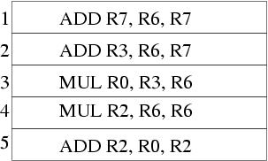
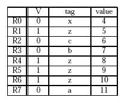

In a split transaction bus, the bus is used only when information
needs to be transferred on the bus. The communicating devices release
the bus if there is no need to transfer data on the bus. Hence,
multiple concurrent bus transactions can take place simultaneously,
which likely improves system performance.

The input and output signals of the controller are:
| Signal | Type | Function |
| DEV | Input | Asserted when the device needs to initiate a bus transaction |
| BGin | Input | Incoming bus grant signal, asserted by the priority arbitration unit |
| BBSYin | Input | Asserted by the current bus master. Negative edge indicates the end of a bus cycle. |
| MSYN | Input | Master-side handshaking signal that controls the bus transaction between the bus master and the slave |
| SSYN | Input | Slave-side handshaking signal that controls the bus transaction between the bus master and the slave |
| BRout | Output | Asserted to request the bus. Goes to the priority arbitration unit. |
| SACK | Output | Asserted by the device that has won the arbitration |
| BBSYout | Output | Same as BBSYin |
| BGout | Output | Asserted when the controller needs to pass the bus grant signal down the daisy chain. |
Two race conditions are:
- Let's say device controller D1 is in BGout
state. This means that some device D2 that is down the same daisy
chain as D1 had requested and is granted the bus. Let's say the device
of D1 asserts the DEV signal while D1 is in BGout state. D3
will eventually receive the BGin signal and transition to
the SACK state. It will take some time for the SACK signal to travel
to the priority arbitration unit. The SACK signal probably reaches D1
before it reaches the priority arbitration unit. Hence, when the SACK
signal reaches D1 the BGin input of D1 is still being
asserted. Therefore, upon receiving the SACK signal D1 will
immediately transition to IDLE to BRout to SACK
states. Hence, both D1 and D3 will be asserting the SACK signal which
is not desirable. A simple solution that fixes this race condition is
not transitioning to IDLE state if the BGin signal is still
high.
- This race condition is a little bit more subtle. From the PAU side. the PAU asserts BGj which works its way down the daisy chain to all devices at BRj. Before SACK is asserted, a controller asserts BRk, where k is higher priority than j. PAU now asserts BGk, and you have two BG signals propagating, which will result in two controllers thinking they are the next bus master. Solution: PAU latches BR signals when it sees NOT-SACK, indicating it is okay to grant the bus again. NOT-SACK is also gated (after sufficient delay) with the BG signals, guaranteeing that a BG signal cannot be asserted until after PAU logic has taken effect. Any subsequent BR signal does not get latched and so can not affect the PAU logic.
- The solution is shown below.

- It is possible. Consider a case where device 3 and 4 just alternate the bus.
- The solution is shown below.

Assume an ADD operation is executed like this in the pipeline: |-F-|-D-|-A-|-A-|-A-|-A-|-S-|
and a MUL operation is executed like this in the pipeline: |-F-|-D-|-M-|-M-|-M-|-M-|-M-|-M-|-S-|
F: Fetch, D: Decode, A: Execute stage (for ADD), M: Execute stage for MUL, S: Store result (Write-back)
- ADDs require 7 cycles (fetch, decode, 4 execute, store), and MULs require 9 cycles (fetch, decode, 6 execute, store). For
3 ADD instructions and 3 MUL instructions, the execution time is 3*7 + 3*9 = 48 cycles.
- Pipeline with scoreboarding and five adders and five multipliers:
Assumptions: - one instruction fetched per cycle 1) No data forwarding: the destination register is marked valid in the S stage (a dependent instruction starts executing after the S stage of the instruction it depends on) |-F-|-D-|-M-|-M-|-M-|-M-|-M-|-M-|-S-| |-F-|-D-|-D-|-D-|-D-|-D-|-D-|-D-|-A-|-A-|-A-|-A-|-S-| |-F-|-F-|-F-|-F-|-F-|-F-|-F-|-D-|-A-|-A-|-A-|-A-|-S-| |-F-|-D-|-M-|-M-|-M-|-M-|-M-|-M-|-S-| |-F-|-D-|-D-|-D-|-D-|-D-|-D-|-D-|-A-|-A-|-A-|-A-|-S-| |-F-|-F-|-F-|-F-|-F-|-F-|-F-|-D-|-M-|-M-|-M-|-M-|-M-|-M-|-S-| 26 cycles 2) With forwarding: |-F-|-D-|-M-|-M-|-M-|-M-|-M-|-M-|-S-| |-F-|-D-|-D-|-D-|-D-|-D-|-D-|-A-|-A-|-A-|-A-|-S-| |-F-|-F-|-F-|-F-|-F-|-F-|-D-|-A-|-A-|-A-|-A-|-S-| |-F-|-D-|-M-|-M-|-M-|-M-|-M-|-M-|-S-| |-F-|-D-|-D-|-D-|-D-|-D-|-D-|-A-|-A-|-A-|-A-|-S-| |-F-|-F-|-F-|-F-|-F-|-F-|-D-|-M-|-M-|-M-|-M-|-M-|-M-|-S-| 24 cycles
- Pipeline with scoreboarding and one adder and one multiplier:
Assumptions: - one instruction fetched per cycle 1) The adder and multiplier are not pipelined and there is no data forwarding: |-F-|-D-|-M-|-M-|-M-|-M-|-M-|-M-|-S-| |-F-|-D-|-D-|-D-|-D-|-D-|-D-|-D-|-A-|-A-|-A-|-A-|-S-| |-F-|-F-|-F-|-F-|-F-|-F-|-F-|-D-|-D-|-D-|-D-|-A-|-A-|-A-|-A-|-S-| |-F-|-F-|-F-|-F-|-D-|-M-|-M-|-M-|-M-|-M-|-M-|-S-| |-F-|-D-|-D-|-D-|-D-|-D-|-D-|-D-|-A-|-A-|-A-|-A-|-S-| |-F-|-F-|-F-|-F-|-F-|-F-|-F-|-D-|-M-|-M-|-M-|-M-|-M-|-M-|-S-| 29 cycles 2) The adder and multiplier are not pipelined and there is data forwarding: |-F-|-D-|-M-|-M-|-M-|-M-|-M-|-M-|-S-| |-F-|-D-|-D-|-D-|-D-|-D-|-D-|-A-|-A-|-A-|-A-|-S-| |-F-|-F-|-F-|-F-|-F-|-F-|-D-|-D-|-D-|-D-|-A-|-A-|-A-|-A-|-S-| |-F-|-F-|-F-|-D-|-M-|-M-|-M-|-M-|-M-|-M-|-S-| |-F-|-D-|-D-|-D-|-D-|-D-|-D-|-A-|-A-|-A-|-A-|-S-| |-F-|-F-|-F-|-F-|-F-|-F-|-D-|-M-|-M-|-M-|-M-|-M-|-M-|-S-| 27 cycles 3) The adder and multiplier are pipelined and there is no data forwarding: |-F-|-D-|-M-|-M-|-M-|-M-|-M-|-M-|-S-| |-F-|-D-|-D-|-D-|-D-|-D-|-D-|-D-|-A-|-A-|-A-|-A-|-S-| |-F-|-F-|-F-|-F-|-F-|-F-|-F-|-D-|-A-|-A-|-A-|-A-|-S-| |-F-|-D-|-M-|-M-|-M-|-M-|-M-|-M-|-S-| |-F-|-D-|-D-|-D-|-D-|-D-|-D-|-D-|-A-|-A-|-A-|-A-|-S-| |-F-|-F-|-F-|-F-|-F-|-F-|-F-|-D-|-M-|-M-|-M-|-M-|-M-|-M-|-S-| 26 cycles 4) The adder and multiplier are pipelined and there is data forwarding: |-F-|-D-|-M-|-M-|-M-|-M-|-M-|-M-|-S-| |-F-|-D-|-D-|-D-|-D-|-D-|-D-|-A-|-A-|-A-|-A-|-S-| |-F-|-F-|-F-|-F-|-F-|-F-|-D-|-A-|-A-|-A-|-A-|-S-| |-F-|-D-|-M-|-M-|-M-|-M-|-M-|-M-|-S-| |-F-|-D-|-D-|-D-|-D-|-D-|-D-|-A-|-A-|-A-|-A-|-S-| |-F-|-F-|-F-|-F-|-F-|-F-|-D-|-M-|-M-|-M-|-M-|-M-|-M-|-S-| 24 cycles
- There are enough ports to the register file.
- There are enough ports to the memory.
- There are separate execution units for ADD, AND, STW, and BR instructions (They can all be in the execute stage at the same time.)
-
1 2 3 4 5 6 7 8 9 10 11 12 13 14 -------------------------------------------------------------------- Start of first iteration (R1 is even) STW F | D | E | E | E | S ADD F | D | E | E | E | S AND F | D | E | E | S BRz F | D | D | E | S ADD F | D | E | E | E | S ADD F | D | E | E | E | S BRp F | D | D | D | E | S -------------------------------------------------------------------- End of the first iteration (R1 is odd now) STW F
The loop takes the same number of cycles to execute for even and odd values of R1. Each iteration takes 14 cycles in the steady state. There are 5 iterations for even values of R1 and 4 iterations for odd values of R1. The total number of cycles is:(14 * 5) + (14 * 4) + 1 = 127
The extra 1 cycle comes from the last iteration (Store result stage of the BRp instruction). -
1 2 3 4 5 6 7 8 9 10 11 12 13 -------------------------------------------------------------------- Start of first iteration (R1 is even) STW F | D | E | E | E | S ADD F | D | E | E | E | S AND F | D | E | E | S BRz F | D | D | E | S ADD F | F | D | E | E | E | S ADD F | D | E | E | E | S BRp F | D | D | D | E | S -------------------------------------------------------------------- End of the first iteration (R1 is odd now) STW F | F | F | D | E | E | E | S |
The loop takes the same number of cycles to execute for even and odd values of R1. Each iteration takes 13 cycles but 3 cycles can be overlapped with the next iteration. The total number of cycles is:(10*9) + 3 = 93
- BRz instruction will always be predicted not taken. It is taken
when R1 is even. So it will be mispredicted when R1 is even and
correctly predicted when R1 is odd. The following diagram shows three
consecutive iterations of the loop. In the first iteration, BRz is
mispredicted, in the second iteration it is correctly predicted.
The first BRp instruction is always predicted taken. It is always predicted correctly. The second BRp instruction is also always predicted taken. It is mispredicted only once in the last iteration of the loop.1 2 3 4 5 6 7 8 9 10 11 12 13 14 15 16 17 18 19 20 21 22 23 24 25 26 27 28 29 30 31 32 33 -------------------------------------------------------------------------------------------------------------- Start of first iteration (R1 is even) STW F | D | E | E | E | S ADD F | D | E | E | E | S AND F | D | E | E | S BRz F | D | D | E | S (Mispredicted) ADD R1, R1, #3 F | F | D | Flushed ADD R5, R5, #-1 F | Flushed ADD R1, R1, #1 F | D | E | E | E | S ADD R7, R7, #-1 F | D | E | E | E | S BRp DOIT F | D | D | D | E | S (Correctly predicted) ------------------------------------------------------------------------------------------------------------- Start of second iteration (R1 is odd) STW F | F | F | D | E | E | E | S ADD F | D | E | E | E | S AND F | D | E | E | S BRz F | D | D | E | S (Correctly predicted) ADD R1, R1, #3 F | F | D | E | E | E | S ADD R5, R5, #-1 F | D | E | E | E | S BRp DOIT F | D | D | D | E | S (Correctly predicted) ------------------------------------------------------------------------------------------------------------ Third iteration (R1 is even) STW F | F | F | D | E | E | S ADD F | D | E | E | E | S AND F | D | E | E | S BRz F | D | D | E | S (Mispredicted) ADD R1, R1, #3 F | F | D | Flushed ADD R5, R5, #-1 F | Flushed ADD R1, R1, #1 F | D | E | E | E | S ADD R7, R7, #-1 F | D | E | E | E | S BRp DOIT F | D | D | D | E | S (Correctly predicted) <--------- beginning of the loop ----><------------------------ steady state (22 cycles) ------------------------------------>
Loop steady state is shown above. It takes 22 cycles and it is repeated 4 times. The beginning of the loop (until the steady state) takes 10 cycles as shown above. The end of the loop (part of the last iteration which is not in steady state) takes 5 more cycles to execute. The total number of cycles is:10 + (4 * 22) + 5 = 103
Prediction accuracies for each branch are:- BRz = 4/9 (Correctly predicted when R1 is odd, R1 is odd for 4 iterations of the loop)
- first BRp = 4/4
- second BRp = 4/5 (Mispredicted only in the last iteration - Note that this misprediction does not affect the number of cycles it takes to execute the loop) v
Combined branch prediction accuracy = 12/18 = 67%


